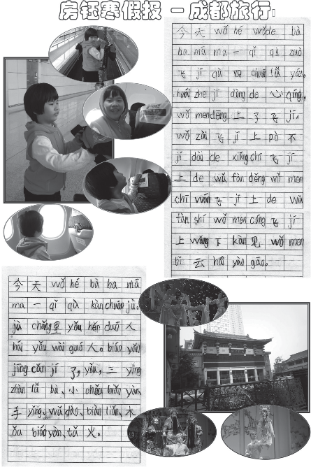
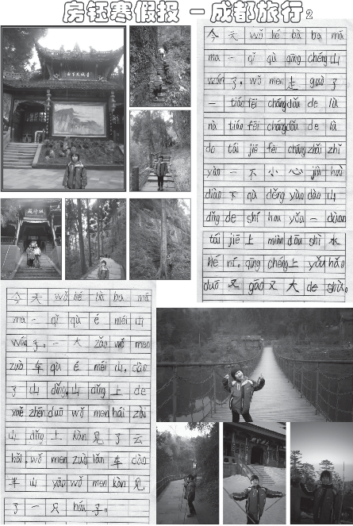
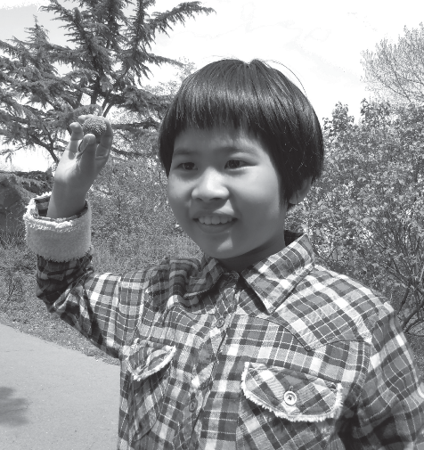

小豆包的幼升小经历
2010-03-22 小孩上小学，太让人心情纠结了
今年 9 月，小孩就要上小学了，都说西城和海淀的教学质量好，我们决定选择这两个区。
原来以为出钱就能搞定，经过两个月深入了解，发现拿着钱居然找不到庙门，太费劲了。
四处托关系，最直接的关系也是经过至少四层才能接触到学校，想想都费劲，变数太大。
目前报名的学校：
海淀外国语实验小学校，报了卡登班，每年共需 5 万多点，费用有点高
建华小学，进行了一次面试，说还有复试，正在等消息
登记了西城的复兴门外一小，在门卫登记的
2010-03-23 意外信息
最近经常去 E 度网站，关注幼升小的信息，来缓解一下紧张的神经。
昨天无意中知道同事的老婆在西城区中古友谊小学，犹如又看见了一颗稻草，不过有可能时间有点晚了，折磨呀。
2010-03-26 又一个意外
前天，租我房子的那个哥们，听说我在找学校，主动提出帮我联系一下北大附小，说有熟人，也不知道能否成功。本来说让他 6 月份前退房，我好回去卖房子或者为了小孩上学居住，他希望多住 5 年，所以才希望也能帮我一个忙，如果成功了，应该就是双赢了，呵呵。不过房租就是低了些，哈哈。
现在处于消息真空期，等待中。
2010-03-29 好消息
同事的老婆周末说可以帮助联系她在西城任教的学校，准备先看看小孩，看来这个关系是最靠谱的了。周末见见面吧。
总共搞了 5 个关系，海淀 3 个，西城 2 个，但其余的还在等，而且中间隔了太多层，不知道有没有结果。
老婆问我想换工作不，一言难尽呀。
2010-04-20 否定吧，反正没谱
两天前，租房子的哥们回话说：已经让他的哥们 ( 领导 ) 帮助跑关系了，不过，需要先拿 2 万块钱去送礼，如果对方 ( 校长) 不收的话，那就没有任何希望了，如果对方收下了，那肯定能搞定。我答复说：先不要花钱送礼，可以商量好多少钱，等学校的事情搞定后，一并给，而且包括好处费等，肯定不会少的。又等了一天，哥们回话说：不行，必须先拿点钱跑关系，要不没法办。我说：我考虑下吧。
我分析了两天，决定放弃这条线，因为有些迷茫。首先租房子的哥们，租了几年的房子，但还是不熟；而且托的关系也一点不清楚，只是说关系很硬，如果真的关系比较硬的话，怎么会先要送礼呢；而且也没有谈以后的好处费如何，万一狮子大开口，不好收场呀。
算了，这条线本来也没有太重视。放弃吧。
2010-04-26 今天心情比较差
两天前，双榆树中心小学来了个短信，说最近有家校见面活动，我确认参加，今天去学校看了看，离人民大学很近，就是太小，操场也就 2 个篮球场地那么大，很袖珍。
另外，今天给帮助联系中关村三小的那个同志打电话，问一下有无进展，答复是：“学校不好进，看看能否另找关系”。哎，彻底无语。一共找个 4 个关系，现在剩了 3 个，但愿不要像这个一样。
前几天，建华小学和海淀外国语学校都面试通过，可以交钱了，但是主要考虑是民办小学，还要住校，就都没有交钱，过了交钱的最后期限，等等以后没有办法时候再说。
2010-04-27 大面积撒网中
今天去了双榆树中心小学参加了家校见面会，感觉这个学校就是太小了，招收 90 个人。硬件条件感觉不太理想，还是不了解学校的情况呀。
还是继续参加面试，大面积撒网中。
2010-05-04 又找了一个比较狠的关系
上周初，中关村三小的关系说已经无能为力了，心情郁闷了两天。第三天的时候，老大（当时也是他帮助找到三小的中间人的）打来电话，说三小已经不行了，他又帮助找了个关系（C 总），可以帮助跑跑中关村二小。第二天，C 总领着我到了市教委，见到了 W 处长，说时间有点晚，其他好学校都送人进去过了，只有中关村二小还没有送人进去过，就试试它吧。
心理感受：这个关系看来比较狠，可能花钱也比较狠。没办法，谁让咱想上好点的学校呢。
（老大是胡有理的原公司的高管）
2010-05-07 碰到了一个难题
今天下午，老大打来电话，说C 总上次感觉到我对中关村二小有些犹豫（我好像没有表现出来呀，都是人精啊），问我是否积极推进，如果积极推进的话，那么这个办成了，必须把别的都放弃。我对老大实话实说，说我也比较看好并希望优先选择西城的中古小学，而且也不敢完全压宝一棵树上呀，老大是非常理解我，但也不希望把中间的关系搞僵了，因为以前他帮人办过，最后办成了，但是没有去，以后就不好再办事了。
老大让我和老婆商量好再答复。我赶紧给老婆打电话，并让她答复（毕竟她和老大同事过，说话更能明确些，不用绕弯子）。
最后，老婆的答复是：不用让 C 总催促中关村二小的关系，等等看。
哎，但愿不要鸡飞蛋打。
2010-05-17 消息真空
最近关于幼升小没有任何消息，真是煎熬呀。
最近股票大跌，心情也较差，赔了 5.7 万。
2010-05-18 听说中古开始面试了
听说中古开始面试了 , 怎么我还不知道呢。什么时候通知我呢？
2010-05-19 今天心情高兴又有些担心
终于等到了最心仪的学校通知下周一去面试了。牛校面试要求就是不一样啊，要求父母都要在，还要父母的学历证书。
帮助联系的哥们也打来电话，说了考试的难度，高兴的心情又有些担心，哎，煎熬呀。
2010-05-25 这个周末 , 最忙碌了
本周末，小学都开始面试了，我也参加了 3 场面试。
5 月 22 日，参加了石油小学的面试，由中智组织的共建小学面试安排在下午 2：30 分。早上登了香山，小孩表现不错，为了坐缆车，登到了山顶，（小孩居然和成人同样的票价，因为身高超过 120）。下午面试完 4 点多了，感觉安排的还不错。不过录取的比例可能在 20% 左右。
5 月 23 日，下午 1 点半，去了双榆树中心小学面试，感觉这次面试就是走过场，老师的口气是因为当时校长的一句话：所有提交表格的小孩都有面试的机会。面试时，老师的话给家长增加了很多紧张气氛，对于这种走过场的行为也很鄙视，浪费大家时间。录取概率 1%。
5 月 24 日，参加了中古友谊小学的面试。感觉中古的老师比较负责，早上还电话提醒面试。就是地铁出来后打车很难，当时急得够呛，幸好没有迟到。中古要求家长双方都要到，要家长学历原件，还要和每个家长单独交流。大概 50分钟左右吧，小孩面试出来，也没说出来具体考了些什么。出来后，又到三里河三小的中间人哪里，准备打听些消息，主要是促进一下，不过，那个老大居然不见，说马上联系。然后不到 5 分钟接到市教委的大哥（尊称）电话，让去取条子（就是推荐小学的条子），赶紧去来，费了半天劲找到了中关村二小的大门，交到了中关村二小的门卫处。感觉门卫对这种条子很清楚，好像天天能接到不少的样子。今天的办事效率实在是高，居然一上午，办了这么多的事情。
本来以为面试完，心情会放松些，谁成想，接下来又是焦急的等待，心情更加的焦虑。
2010-05-27 双榆树中心小学有点让我失望
昨天收到双榆树中心小学的短信，说：“因人数过多，你的小孩没有被录取”。确实如我说的走过场呀，有一点失望，希望以后不要走过场了，现在人的承受力和理解力是很高的，没有必要为了校长的一句话这样做。不过，老师还是比较负责的，尽早告诉了家长，不让家长再浪费多余的时间。而且，我本身也在犹豫是否真的会上这个学校，现在不用再考虑这个问题了，毕竟选择也是一种痛苦。
2010-05-28 小孩第一次碰到的重大问题
昨晚和以前一样，晚上 7 点多到幼儿园接上小孩回家，路上给她放英语 CD，她也在嘟嘟囔囔说着幼儿园的英语。
晚上吃完饭，由于时间比较晚了，我就让她从：学英语、做数学题、写拼音中选择一个来做家庭作业，她选择了数学题，做了 2 页，获得了 10 朵小红花。
睡觉前，听她在和姥姥要着什么东西，一问，才知道：她前几天，有个幼儿园小朋友，从日本买了个小本本（很小很小，上面有个钥匙链），让她玩几天，她要还给小朋友（估计是小朋友向她讨要），找不到了。姥姥说被她洗衣服弄坏了。然后，明显看到她着急了，开始琢磨着如何补偿小朋友，嘴里还在说着臭姥姥等。我建议她把自己的本子挑一个给小朋友，她说小朋友不同意，小朋友会哭会告诉老师会不和她玩。她要把她的东西一个闹钟或者小仓鼠包括笼子给那个小朋友。
从来没有见过她这样认真的想一件事情，也从来没有见过她这样不惜把自己的东西给小朋友的。感到她这次碰到了自己最在意的事情了。晚上睡觉也没有说看动画片和让我给讲故事，感觉她心事重重的。夜里做梦还在喊臭姥姥，还在向姥姥要东西。
早上起来，她还在担心这些事情，哈哈。
今晚看看她如何解决的吧。
2010-06-02 小孩子怎么才能主动解决问题呢
前两天 , 我家小孩碰到的那个“重大的事情”，我问她怎么解决的，她说那个小朋友忘了这个事情，她也没有主动提起，就是这样到现在还没有解决。这两天，我教育她说要主动解决碰到的事情，不要去躲避，但没有效果。
2010-06-02 三里河三小怎么还没有动静
上次托的一个关系，让他帮助跑三里河三小，到现在还是没有任何消息。昨天又找了个三小的老师，让再帮忙跑跑。
现在是越等越没有底了。
2010-06-09 等待 , 是痛苦的
这几天，小孩升小学没有任何消息，等待真是痛苦呀！马上就到了统一招生的时候了，还是没有消息。
今天实在是坐不住了，给三里河三小的那个老师的老公打了个电话，他说 19 号上午 8:30 面试。也算是一个好消息了。不过，19 号有 2 个小学要面试了。
2010-06-11 难过、心慌
今天早上，中古小学通知我，小孩没有被录取。痛苦、心慌、难过。
2010-06-17 片内的小学面试了 , 但还是不想去
14 号 , 去了片内的小学 , 在朝阳区 , 很快 15 分钟结束。不过，还是不想去那个学校。现在就等待石油小学、三里三、复兴门外一小的结果了，不过，后两个要道 19 号才去面试。
2010-06-23 心慌 , 非常慌
6 月 19 日面试了 3 个学校，三里三、复外一、青龙桥，青龙桥当时可以缴费入学，截至 21 日，时间太短，觉得还是再等等其他学校的消息。
这几天就一直在焦虑中度过。
19 日晚，和小孩一起来到青岛，20 日，把她送到青岛的幼儿园（幼儿园举办的活动）。21 日我沿着海边走了约 10 多公里，锻炼了一回。
22 日下午坐火车去济南，路上，接到中智的短信，通知石油小学没有录取，然后，就开始有点心慌。
22 日开始，三里三开始通知部分家长交费，我还是没有任何消息。这几天的日子，比我当年考大学还难熬。
23 日，去大明湖转了转，明显状态不好，总是看手机，担心漏掉电话。总之，就是心慌。
2010-06-23 三里河三小通知交费了
今天在泰安，可谓心情变化颇为曲折，幸好我心脏还不错，否则，后果难以预料。
下午是 18:08 的回北京的火车，中午吃完饭无所事事，就去了千佛寺。看来佛佑我呀。刚到千佛山，就收到一个电话和一个短信，电话是中智的打来，说帮助再看看石油小学（之前被拒）；短信说中古的关系，说可能有戏（已经之前被学校电话拒绝了，我死马当活马，让她再帮助看看）。这样登山时的心情就稍稍好些。
不过今天登山（很小的山）时，总会看一下手机，待会又看一下，快幻听了，担心错过电话（时间长了，肯定会养成毛病）。在下午 4 点多的时候，刚下山，走到千佛寺的门口（接到电话和短信的地方），收到三里河三小的短信，说可以交费了，心情大好。
上午刚刚决定不去泰山了，现在决定去泰山，马上去车站改签车票，买票去泰山，下午 7 点到泰安。出站后，买运动鞋，买衣服。到了 9 点半，去喝酒，好多地方都关门了，呵呵，泰山啤酒度数有点低，酒精度才 2.6。
2010-06-25 好事多了也头疼 , 但不心慌
昨晚回北京的路上 , 突然接到一个电话 , 但还没有接就断线了 , 现在对电话已经没有那么紧张了 , 不过还是拨了回去。居然是中关村 2 小的电话，让去百旺校区入学登记。研究了半天也迷迷糊糊，最后断定，应该是去面试。然后就又是开始头疼，选择也是头疼。
今天一早，去了三里河三小取了交费单，让下周一去银行交费，心情不错。现在咱这觉悟，高高兴兴，排着长队，去为教育事业捐款，那就叫觉悟高，眼光远，理念什么的就不说了。
给中古的关系打了电话，希望他下周一前能有消息。
同时还是决定周六去中关村 2 小面试，碰碰运气，同时带着让孩子见见场面的打算。有底气就是不同呀。
2010-06-28 捐款回来
今天一早 , 就拿着 1 万 5 千块钱 , 去捐款 ,9:30 左右 , 就到了阜成门外的银行 , 进去一看 , 没有人排队 , 就出来了 , 到处转转去了保险公司、麦当劳、万通，又吃了午饭，看看时间快下午 1 点半了，哎，没办法，拖的时间够长了，捐吧，就又到银行捐了钱。拿着单子去了三里河三小学校，然后就回家了。
拖了这么长时间，不为别的，是在等另外 2 个小学的电话，一个是中古，另一个是中关村 2 小。杳无音讯，没办法，先交了吧。
2010-06-29 中古也通知录取了 , 选择真是痛苦哇
晚上收到中古友谊小学的关系人的电话 , 说找校长了 , 终于答应录取了。顿时让我又陷入痛苦之中，这两个学校是差不多的学校，中古的硬件比较好，原来就是我的心仪的学校。三里三已经交费了，能退费吗？
如果过几天，中关村 2 小也录取了，那我才是要疯了呢。
走一步看一步吧。
2010-06-30 小学的事情就这么定了吧 , 还算完美
今天一早 , 去了中古友谊小学，见了校长，信誓旦旦地说想来中古，宁可舍弃以前交的赞助费，校长给了我交款的单子，让我明早去交钱。
然后，立马去了三里三，见了教务的人，说想退费，老师刚说出不能退，我就说咨询了教委，教委说学校写个申请就可以了，而且我也说明如果退不了就还继续来这里上学。也说了不希望影响学校的招生，所以一大早跑来了，等等，最后老师说负责的人不在，让下午 3 点再来。
到现在为止，我还难以抉择到底去哪里，如果三小不退费，我想也就是它了，毕竟和中古是差不多的。
中午，三小来电话，说教委可以退，但要到 9 月份，让我等到 9 月份再退。我现在就可以去中古了，高兴吗？也没有觉得太高兴，不过，这次终于觉得可以不用再折腾了。明天去交钱，这次是 3 万呀。
如果中关村 2 小今天下午来电话呢，呵呵，只是随便想想。
2010-07-01 再次捐款 , 我已经很从容
今天一大早 , 送了孩子去幼儿园 , 然后 (8 点左右 ) 开车去三里河路的中国人民银行交钱 , 这次是中古小学 , 决定就是它了。下了决定后，心里稳当多了，再没有患得患失的感觉了。
大概 9 点 20 分，到了银行门口，门卫那叫一个大爷派头，让我领了一个纸条，我把车开进去，又让我开出来，让我再领一个纸条，派发纸条的说没地方停车，不能给纸条了，我只好把车停在马路边，门卫让我重新领纸条，说刚才的那个已经作废了，我这个气呀，这是银行，NND，又不是发改委，也不是财政部，虽然有个人民两个字，也不至于牛成这样呀。我大声嚷嚷了几句，就让进去了，对了，当时还在下雨，没有带伞，哎，意外呀，破坏了我捐款的高兴心情。
很快，3 分钟，捐完了，3 万，没有任何收条。
看来，咱还是穷人呀，即使干那些高尚的捐款，心中也还是嘀嘀咕咕的，没办法。不过，学校总算搞定，如果 9 月份顺利退还第一笔捐款，那就完美了，哈哈，咱确实不是高尚的人，要不，怎么还让退还！
2010-07-05 我瘦了 , 黑了 , 腿也细了
还没有从小学入学的成功中找到胜利的感觉，就又钻进了疲惫的租房子运动中了。
连续 3 天，3 个半天，每天围绕着中古转好几圈，被不同的房屋中介带着转来转去，感觉就是：太阳好大呀、200 米居然也那么远、腿越走越细、腰围居然都瘦了、周围越来越熟悉了。
迷迷糊糊中，有 1 套房子居然看了 3 遍，2 套房子看了 2 遍，其间还有不同的中介要看相同的房子，越发加剧了我的减肥，脚都走出泡了。
现在有经验了，有电话先问清楚是哪个房子，然后再看，免得重复。
中古小学附近的房子：很少，很小，很旧。
运动还要持续下去。
2010-07-07 狗屎运与取舍
转了几天的房子，累、晒、渴、迷迷糊糊。有时我也在想，何必这么累呢，不过，还是希望给小孩一个相对好的环境，让她安心、快乐的学习、成长，看过了不下 20 套房子，总觉得有很多遗憾，毕竟和我自己的房子相差太多，我现在住的 142 平，全实木的家具沙发地板，小孩一下子又回到 80 年代拥挤 60 平米的环境，大家都要适应呀。
于是，我就一再的看下去。
昨天，突然接到中关村二小来电话 , 约晚上谈话 , 被我直接拒绝 , 我说找好
学校了。到今天才约谈话 , 我都捐助了 2 所小学了 , 如果再捐 , 就 10 万了 , 我实在不是高尚的人 , 不惯他们的大爷脾气 , 直接拒绝 !!! 不过，有一霎那，我感觉自己有些冲动，是不是有些拒绝的太快，好久没有冲动的感觉了，今天居然冲动了，呵呵。
晚上，带着岳父去看学校附近的房子，有一套自己看了一遍，离学校很近，很多毛病，但也能凑合，而且是三里河三小老师的房子，感觉人很好，就再去看看。
同时也约了另外 3 个房子，反正去一次不容易，多看几个吧。最后一个，是个 3 居，每月 4500 元，以前 3 家合租，我一眼就看中了，赶紧给房东打电话。房东说：“今天下午 2 点刚发布消息，到晚上就有 4 拨看房子的，都说要定下来，不知道该怎么办，本来还想能优惠呢，现在却想提价，不过我既然今天来了，就还是这个价。”，我说了半天好话，本来还打算砍砍价、让她加 2 个床，或者有个免租期，后来这些提都没敢提（什么世道）。房东最后让我等 30 分钟，如果这段时间前面几个没有定下来，她就和我定下来，我就等着，到了晚上8 点50 分，我给她打电话，她说有个人还在和她谈，让我再等 5 分钟。又等了一会，她给我电话说可以和我定，让我明天和她联系，我说别的呀，今天要不能签合同，我先交定金。于是我给了 2000 元定金，回家了。
感觉今天租房子我又赶上了计划经济的时代，容不得我有任何意见，完全的弱势。不过，比找学校还是容易多了，毕竟就是钱的问题。结局非常满意。
2010-07-07 房屋租价上涨，绝对是中介的推波助澜
昨晚半夜 11 点半在 58 同城和赶集网发布了出租房子的信息，准备把我的花乡桥的房子租出去。
5 分钟左右，接到了 2 个中介公司的电话，说要代理，我不同意，说可以带客户，但我要直接和客户签合同。然后赶紧把手机关掉。
早上 8 点开机，到上午 10：30，接到电话有 50 个，个人打来的只有 3 个。本来对价格还有些犹豫的我，面对如此多的电话，有些发飘，越发坚定不降价，哈哈，所以我认为，中介起了推波助澜的作用。
就是不知道能不能坚持到最后，哈哈。
2010-07-08 差不多了，我能做的，都做了
终于把西城的房子的合同鉴定了，比我的预算高了些，7 月15 日去交接房子，然后清洁一下就可以搬家了。
今天一早，到了中古小学，排了 1 个小时的队，领到了入学通知书。
就差把我自己的房子租出去，并把三里河三小的钱要回来，升学的事就ok 了。
到现在为止，我能做的，都差不多完成了，无论是学前教育、择校的准备、中间的取舍、准备相对好些的学习环境，这些都已经搞定，我已经尽我的努力了，而且结果也还算很完美。哎，给孩子花钱，我大方了许多。
搬到了西城，我的生活也会从这个月开始，发生很大的变化，希望小豆包也会努力，可以给我更多的安慰。
2010-07-17 去新租的房子做了保洁
今天一早 , 到建材城随便找了个做保洁的 , 就让他们去新租的房子那搞卫生了, 比我想象的还脏。3 个人，从 11 点一直搞到下午 4 点，能扔掉的全部扔掉，这回清爽了许多。
房东不是一般的啰嗦，前一天，我在卫生间放点水试试热水器，她还说我是不是洗澡了，不要把地板弄湿了。我说当时的那味，能洗澡吗？
接下来，自己再搞搞卫生就可以了搬家了，毕竟保洁的不可能那么细致，他们只是把最脏的地方弄干净了。
2010-08-08 房子租出去了
今天的日子还不错，大吉。这两天，都去青岛了，就我一个人在家里，悠闲自在、闲得发慌。
把我在花乡的房子租出去了，今天又安装了 2 个空调，换了个电视，就基本搞定了。
西城新租的房子，有一堆问题，唉，头疼呀。而且东西没有地方放，也头疼。我都一个人收拾两周了，还是满地的东西无处可放。慢慢来吧。
2010-09-05 小学开学了 , 开始适应新的环境了
搬到西城住了 , 房子小了好多 , 家具旧了好多 , 慢慢调整吧。
小学开学了几天，作息时间变化很大，每天晚上 8 点多就开始睡觉，小孩倒是几分钟就能入睡，我却要好久才能入睡。早上 6：40 起床，有些困。
找了几天学习钢琴的地方，居然没有找到，看来还要往更远的地方跑跑。
最近上班都是坐公交，没有开车，这儿倒是交通方便，不用开车了。
最近事情很杂，都是小孩上学的事情：老师留的作业，到家就忘了，我还要到网上去问别的同学的家长；发新书，包书皮；买文具；买各种东西；唉，就怕准备不到位，连带着家长都挨老师批评。
估计几个月后，才能步入正轨。
2011-01-23 小学生放假了
忙碌的一个学期过去了，累，比想象的累。
上学后，强迫自己的生活有个规律，每天早 6:30 起床，6:50 叫小孩起床，洗簌，吃饭，7:25 出门送到学校，然后我上班，我现在成了单位上班最早的 3个人之一了。晚上 7 点到家，吃饭的同时让小孩弹钢琴，7:30 开始和小孩一起写作业，8:30 睡觉。
最大的体会就是小孩子真是磨蹭呀，而且很会讨价还价。
迷糊间就到了期中考试，考试成绩把我惊醒，居然全班倒数几名，差点被老师叫去谈话，班主任的话就是学习不能举一反三，学得太死。
我深刻反思，感觉问题出在我这里，每天只是机械的完成老师的作业，没有灵活地体现各种题型，于是赶紧取经，最后总结就是：买一套黄冈小学的作业本，增加题型的灵活性。为了保险，我还买了其他的一套类似作业本，还买了二套考试卷子。后来发现，小孩的速度太慢，买的东西多了，根本就没有用，完全用不上，就只在黄冈作业本上下功夫。小孩也很配合，每天都做。
不过，我老婆对我的做法很是反对，认为一年级没有必要，她觉得更重要的是开阔视野。于是她按照她的思路，带着她看世界地图，看百科全书，我呢，还按照我的思路，每天在作业上下功夫。幸亏我一直陪着小孩，坚持着我的加量的作业。
终于不负我的努力，期末考试居然考了 3 个 100 分，语文、数学、英语都是 100 分，感觉比我自己考 100 都高兴。
看来我还要坚持我的方法。
2011-01-23 今天又爬了香山
今天我早上起来，决定和小孩一起爬香山，期末成绩，她体育课老师的评语是肥胖，所以，我要增加她的运动量。
上午 11:20，开始登山，路上，她一直在跟我讨价还价，肯德基、美廉美、烤香肠，一堆的词，最后终于达成一致意见，那就是登山顶，就请她吃肯德基。
爬到了平台，她要休息 10 分钟，吃东西，面包，橘子等。
又出发的时候，我问她这是第几次登香山了，她记得很清楚，说是第四次。确实，从 1 月 1 日开始，这是第四次登香山了，呵呵，同事都说我疯了，这么冷还登香山，呵呵，锻炼身体呀。
她又开始和我讨价还价，说要吃山顶的烤香肠，我说那就放弃肯德基，最后讨价还价，结论：吃烤香肠，同时只能吃肯德基的汉堡，并且回家吃。
快到山顶的时候，我说今天到这里就可以了，你可以放弃了，我们也可以返回了，她说不行，必须要到山顶。
下午1 点左右，到了山顶，她如愿吃上了烤香肠。歇了一会，开始下山。这一次，我觉得很轻松，没有感觉到累，比前几次好的很多。不过，这几次小孩都没有感觉到累。
下午 4 点左右，买了汉堡，回到了家。
以后坚持每周登山一次。但愿如此。
2011-02-14 小孩的作业，我比她着急
忙活了好几天，终于写完了假期的小报，小孩也被我逼的差点和我打架。寒假小报如下：
 2011-08-02 时间飞逝，又过去了半年
日子越过越快，真要按秒来过了。这转眼间，就是半年过去了。（时间飞逝，世间已过去 5000 年）
放假了，我也无所事事了，大家都去青岛了，就我一个了，天天酒肉穿肠过，哈哈。
感觉不再年轻，唉，不再年轻。今天又去锻炼了，晚上又喝酒了，锻炼就是为了喝酒，呵呵。晕，语无伦次。
感觉现在都是为了孩子而活着了，这几天真是难得清闲，每天 1：00 睡觉，看小说，看电视，看电影，喝酒，恶补一下。
好久没有考虑跳槽了，尽管这个单位我很不满意，尽管我一直在单位混日子，尽管我一直想换单位。感觉现在惰性越来越大，潜意识一直在维持现有状态，为何呢，为了小孩？说不清楚。也可能我的性格是绿色的吧，唉，人不逼到绝路，都有惰性呀。
好几天没怎么说话了，基本不用和人说话来沟通。思绪有点乱。
2012-01-05 新的一年，新的开始
又到了新的一年，又到了新的起点。
这半年，紧张、忙碌、焦虑（偶尔），不是因为工作，而是因为小孩的学习。脾气也开始见长，每天的早晨和睡觉前，是我最容易发火的时间段，早上是看着小孩磨磨蹭蹭，禁不住的火往上撞，晚上是忙活她的作业，也是肝火上升。哎，另一种对童年的重新认识呀。
这半年，经常照镜子了，看到自己的面容，在考虑是否要开始使用润肤产品，放弃我以前的纯天然的保养方法。
这半年，股票也赔的一塌糊涂，看都不想看了。
这半年，又换了一辆车，不过快一个月，才开了 2、3 次，主要是怕没电，拉出去溜溜。单位附近也没有停车的地方，而且开车还不如坐地铁快。
这半年，多了惰性，少了激情。
新的一年，新的开始，没有计划，希望能有变化。
